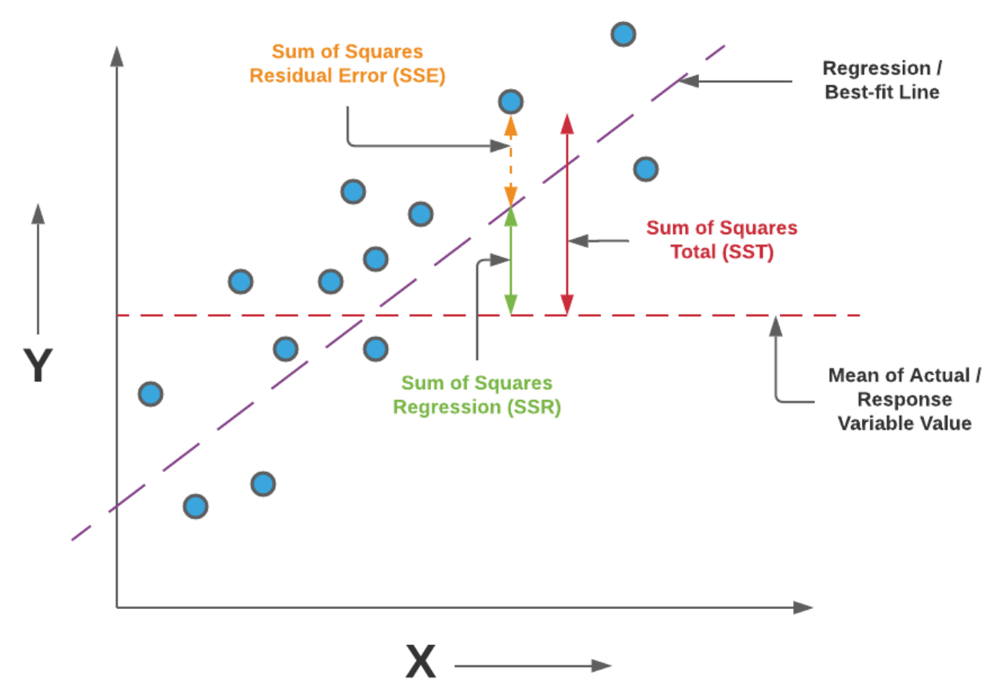

Performance metrics#
Here the symbol \(\hat{y}\) represents the predicted value, \(y\) represents the actual value, and \(n\) is the number of data points. The following are common regression performance metrics.
Mean Absolute Error (MAE)#
Advantages:
Simple to interpret.
Less affected by outliers (all individual errors are weighted equally in the average).
Disadvantages:
Since it uses the modulus, it does not take into account the direction of the error.
Mean Squared Error (MSE)#
Advantages:
Penalizes larger errors more heavily, making it more sensitive to outliers. Optimization algorithms benefit from this penalization, allowing to identify the global minima.
Disadvantages:
Harder to interpret, since if is not in the same units of the original data.
Root Mean Squared Error (RMSE)#
Advantages:
Same units as the output. More straightforward to interpret.
Sensitive to outliers.
Disadvantages:
Sensitive to outliers.
Mean Absolute Error (MAE) vs Root Mean Squared Error (RMSE)#
Which should you use to optimize a model?
MAE less affected by outliers. RMSE more affected by outliers. So, if the cost associated with a large error is big, RMSE should be used. If the cost of the error does not increase significantly with the value of the error, then MAE can be the better option.
R-squared (R2)#
The closer to 1, the better.

Advantages:
Intuitive quantification of the quality of the fit.
Don’t need to compare with other models to see if it’s good or bad.
Disadvantages:
It can be artificially close to 0 or close to 1, for good and bad models, respectively. For example, a nonlinear model can have high \(R^2\) with linear regression. The same function with the same MSE error, but with a different X range, can result in lower \(R^2\)~